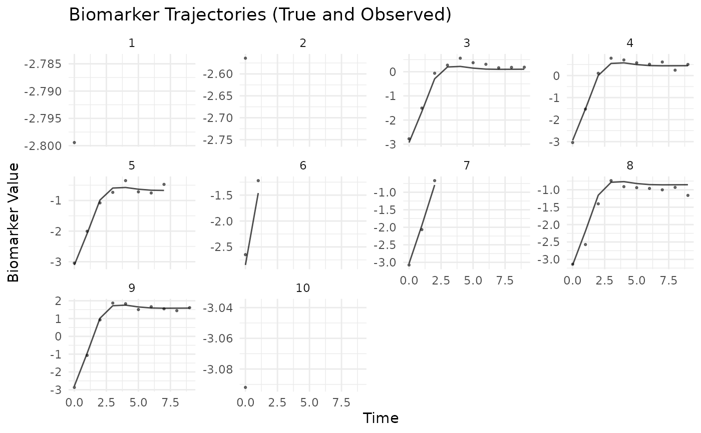
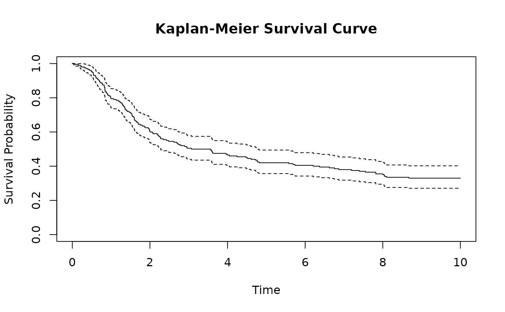

A pre-computed dataset comprising longitudinal biomarker trajectories and
time-to-event outcomes for 200 simulated subjects. This dataset was
generated using the internal function .create_example_data() which
calls simulate with default parameters and seed = 123.
The dataset exemplifies the application of joint
modeling frameworks wherein longitudinal processes are governed by
second-order ordinary differential equations.
Format
A list with two components:
dataA list containing the actual simulated data with:
longitudinal_dataA data frame containing longitudinal observations with columns: id (subject identifier), time (measurement time), observed (biomarker with error), biomarker (true value), velocity, acceleration, x1, x2, x3
survival_dataA data frame containing survival information for 200 subjects with columns: id, time (event/censor), status (1=event, 0=censored), x1, x2, x3, b (random effect)
stateA 200 × 2 matrix containing initial conditions \([m_i(0), \dot{m}_i(0)]\) for each subject
initInitial parameter values for model fitting containing coefficients and configurations
Details
Data Generation Process
Generated using .create_example_data(n_subjects = 200, seed = 123),
with follow-up period from 0 to 10 days and shared random effect
\(b_i \sim \mathcal{N}(0, 0.01)\) (sd = 0.1).
Model Specification
Longitudinal Sub-model (standardized scale):
The biomarker trajectory follows the ODE: $$\ddot{m}_i(t) = -0.6[m_i(t) - 0] - 0.4\dot{m}_i(t) + \mathbf{X}_i^T\boldsymbol{\beta}$$ $$m_i(0) = 1.0 + \mathbf{X}_i^T\boldsymbol{\beta}_{init}, \quad \dot{m}_i(0) = 0$$ $$y_{ij} = m_i(t_{ij}) + b_i + \epsilon_{ij}, \quad \epsilon_{ij} \sim \mathcal{N}(0, 0.01)$$
where \(\boldsymbol{\beta} = (0.8, -0.5, -0.5)^T\), and \(\boldsymbol{\beta}_{init} = (0.1, -0.1, 0.0)^T\).
Survival Sub-model: $$\lambda_i(t) = \frac{1.5}{8}\left(\frac{t}{8}\right)^{0.5} \exp(0.3m_i(t) + 0.7\dot{m}_i(t) + \mathbf{W}_i^T\boldsymbol{\phi} + b_i)$$
where \(\mathbf{W}_i = \mathbf{X}_i\) and \(\boldsymbol{\phi} = (0.4, -0.6, -0.3)^T\).
Examples
# Load the pre-generated dataset
data(sim)
# Access the actual data
long_data <- sim$data$longitudinal_data
surv_data <- sim$data$survival_data
# Examine dataset structure
str(sim$data)
#> List of 3
#> $ longitudinal_data:'data.frame': 1458 obs. of 9 variables:
#> ..$ id : int [1:1458] 1 1 1 2 2 2 3 3 3 3 ...
#> ..$ time : num [1:1458] 0 1 2 0 1 2 0 1 2 3 ...
#> ..$ observed : num [1:1458] 1.19 1.71 2.32 1.44 1.56 ...
#> ..$ biomarker : num [1:1458] 1.23 1.67 2.59 1.25 1.62 ...
#> ..$ velocity : num [1:1458] 0 0.789 0.946 0 0.659 ...
#> ..$ acceleration: num [1:1458] 1.059 0.478 -0.137 0.885 0.399 ...
#> ..$ x1 : num [1:1458] 2.2 2.2 2.2 1.31 1.31 ...
#> ..$ x2 : num [1:1458] -0.0736 -0.0736 -0.0736 -1.1687 -1.1687 ...
#> ..$ x3 : int [1:1458] 0 0 0 0 0 0 1 1 1 1 ...
#> $ survival_data :'data.frame': 200 obs. of 7 variables:
#> ..$ id : int [1:200] 1 2 3 4 5 6 7 8 9 10 ...
#> ..$ time : num [1:200] 2.11 2.29 5.62 1.51 10 ...
#> ..$ status: int [1:200] 1 1 1 1 0 1 1 0 1 0 ...
#> ..$ x1 : num [1:200] 2.199 1.312 -0.265 0.543 -0.414 ...
#> ..$ x2 : num [1:200] -0.0736 -1.1687 -0.6347 -0.0288 0.6707 ...
#> ..$ x3 : int [1:200] 0 0 1 0 1 0 1 1 0 1 ...
#> ..$ b : num [1:200] -0.05605 -0.02302 0.15587 0.00705 0.01293 ...
#> $ state :'data.frame': 200 obs. of 2 variables:
#> ..$ biomarker: num [1:200] 1.227 1.248 1.037 1.057 0.891 ...
#> ..$ velocity : num [1:200] 0 0 0 0 0 0 0 0 0 0 ...
# Summary of covariate x3 (binary)
table(sim$data$survival_data$x3)
#>
#> 0 1
#> 54 146
table(sim$data$survival_data$status)
#>
#> 0 1
#> 83 117
# Mean biomarker levels by x3 group
aggregate(observed ~ x3,
data = sim$data$longitudinal_data,
FUN = mean)
#> x3 observed
#> 1 0 -0.3558958
#> 2 1 -0.8654282
# Event rate stratified by x3 group
aggregate(status ~ x3,
data = sim$data$survival_data,
FUN = mean)
#> x3 status
#> 1 0 0.7037037
#> 2 1 0.5410959
# Visualization of multiple individual trajectories
par(mfrow = c(2, 3)) # 2x3 grid for 6 subjects
for(i in 1:6) {
patient_i <- sim$data$longitudinal_data[
sim$data$longitudinal_data$id == i, ]
plot(patient_i$time, patient_i$observed, type = "l",
xlab = "Time (days)", ylab = "Biomarker",
main = paste("Subject", i),
ylim = c(-3, 3)) # Fixed y-axis for comparison
abline(h = 0, lty = 2, col = "red", lwd = 0.5) # Reference level
# Add true trajectory
lines(patient_i$time, patient_i$biomarker, col = "blue", lty = 2)
}
par(mfrow = c(1, 1)) # Reset layout
legend("topright", legend = c("Observed", "True", "Equilibrium"),
col = c("black", "blue", "red"), lty = c(1, 2, 2), cex = 0.8)

# Comparison of x3 groups (average trajectories)
group1 <- aggregate(biomarker ~ time,
data = sim$data$longitudinal_data[
sim$data$longitudinal_data$x3 == 1,],
FUN = mean)
group0 <- aggregate(biomarker ~ time,
data = sim$data$longitudinal_data[
sim$data$longitudinal_data$x3 == 0,],
FUN = mean)
plot(group1$time, group1$biomarker, type = "l", col = "blue", lwd = 2,
xlab = "Time (days)", ylab = "Mean Biomarker Level",
main = "Average Trajectories by x3 Group (10-day follow-up)",
ylim = range(c(group1$biomarker, group0$biomarker)))
lines(group0$time, group0$biomarker, col = "red", lwd = 2)
abline(h = 0, lty = 2, col = "gray")
legend("topright", legend = c("x3=1", "x3=0", "Equilibrium"),
col = c("blue", "red", "gray"), lty = c(1, 1, 2), lwd = c(2, 2, 1))

if (FALSE) { # \dontrun{
# Multiple trajectory visualization using ggplot2
if (requireNamespace("ggplot2", quietly = TRUE)) {
library(ggplot2)
# Subset first 20 subjects for visualization
subset_data <- sim$data$longitudinal_data[
sim$data$longitudinal_data$id <= 20, ]
ggplot(subset_data, aes(x = time, y = observed)) +
geom_line(aes(color = factor(x3))) +
facet_wrap(~ id, ncol = 5, scales = "free_x") +
geom_hline(yintercept = 0, linetype = "dashed", alpha = 0.5) +
geom_smooth(se = FALSE, method = "loess", size = 0.5, alpha = 0.5) +
scale_color_manual(values = c("0" = "red", "1" = "blue"),
labels = c("x3=0", "x3=1")) +
labs(title = paste("Biomarker Trajectories",
"(First 20 Subjects, 10-day follow-up)"),
subtitle = "Showing convergence dynamics",
x = "Time (days)", y = "Biomarker Level (standardized)",
color = "x3 Group") +
theme_minimal() +
theme(strip.text = element_text(size = 8))
}
} # }